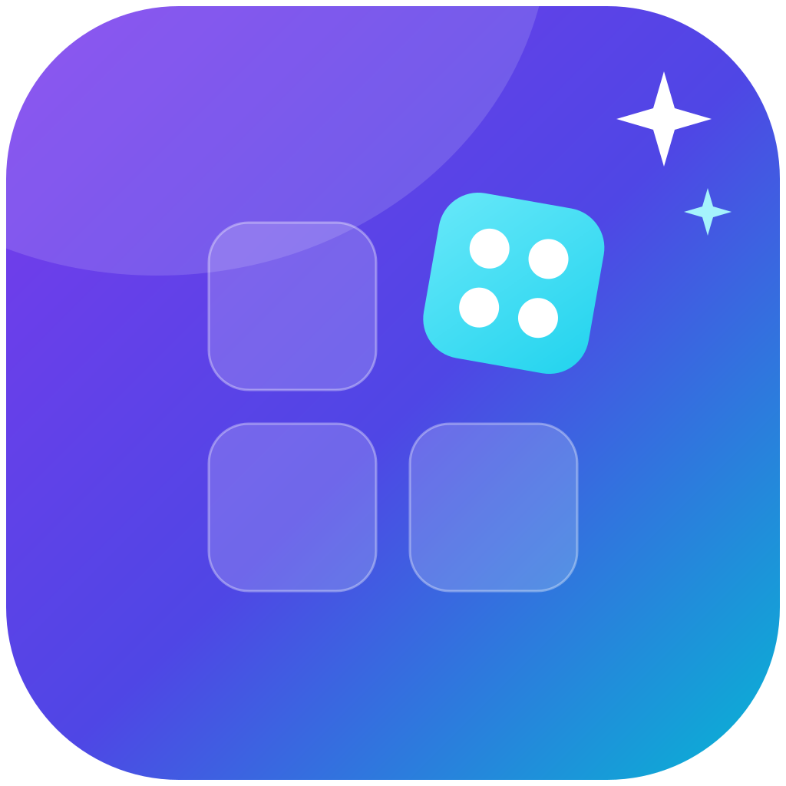

Every installed app, with its real icon. Original artwork follows in the background.
Try another search or add your applications folder.
Renames the app in Finder, not its internal menus. App updates may restore the old filename.
A Finder skin can't change what a running app calls itself in the Dock and menu bar — macOS takes that from inside the app. A full skin also writes this name and your chosen icon inside the app and re-signs it (ad-hoc). The bundle ID, executable and links never change, originals are backed up first, and Restore undoes everything. Trade-offs: the previous developer signature is replaced, and self-updaters may overwrite it (“Keep skins applied” re-applies it). Best for cloned / third-party apps you control.
Give IconCraft the access it needs, and see exactly what it does not ask for.
IconCraft cannot switch macOS permissions on for you — Apple requires your action in System Settings. Use the buttons here, allow IconCraft where needed, then run the checks again. You can finish setup now and return any time from Setup & permissions.